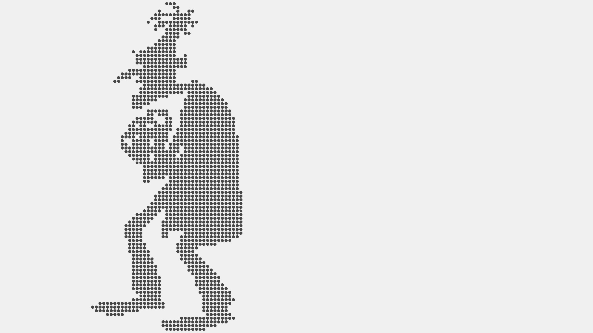
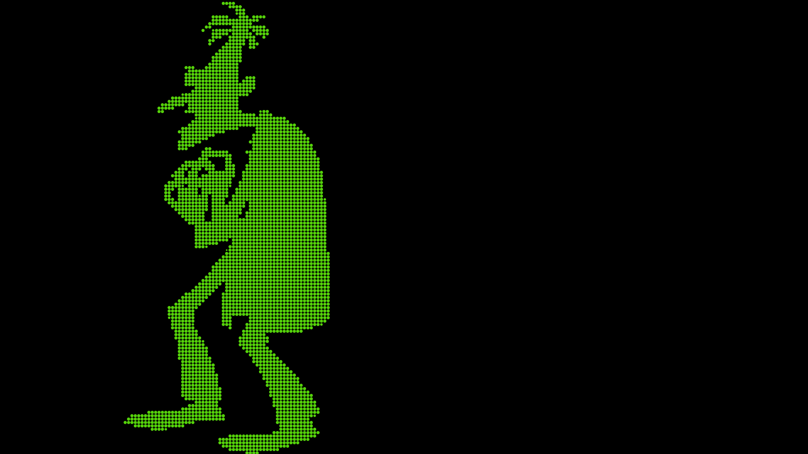
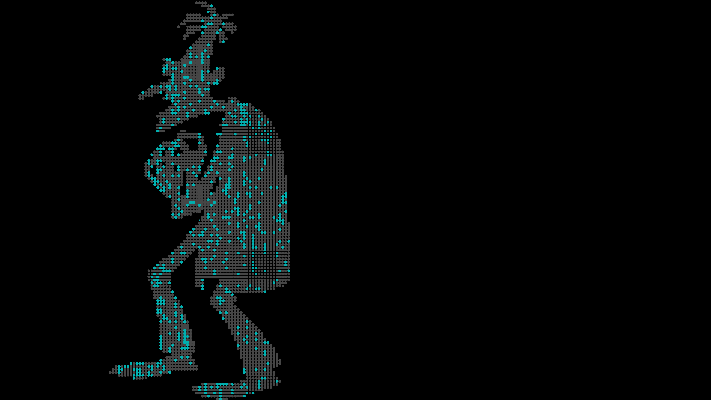

A Visualization
The structure of TV storytelling typically follows a predictable format: the main characters finding a new problem they must resolve in a new way. The structure of the show Phineas & Ferb is a bit more specific. The main characters (Phineas and Ferb) figure out what they're going to invent that day. Their sister, Candace, tries (and fails) to bust them. All the while their pet platypus who doubles as a secret agent is deterring Dr. Heinz Doofenshmirtz latest evil scheme. Because of this strict pattern, a lot of the dialog is repetitive. I'm a fan of the show so I'm familiar with the most repeated phrases. While every character usually has a catch phrase, I thought Doofenshmirtz was not only the most complex character, but also the character with the most dialog repetition. I wanted to visually represent the most common phrases or words I've heard him say on the show. Plus, I liked the idea of deconstructing a self-described villain/evil scientist even though he's very much his own worst enemy and possibly the worst villain of all time.
Fig 01. - Silhouette of Doofenshmirtz.
Fig 02. - Rasterized image, base of particle system.
Conceptually I wanted to explore how much of what we say makes up who we are. Doofenshmirtz heavily identifies with being evil and taking over the tri-state area, but on a deeper level he just wants to be heard, understood, and accepted. He figuratively and literally lights up the most when talking with or about Perry the Platypus. The other filters I included were for mentions of his inators, taking over the tri state area, and evil. I really wanted to include a filter for his tragic backstories which usually explain the motive for his scheme of the day, but there was no standard pattern of dialog to setup his backstories. Most of his backstories involve mentions of his childhood or his parents (emotional trauma starts in childhood, even for cartoons), but the results were inconsistent. Not every mention of childhood is linked to a backstory.
Fig 03. - Testing to see if each line is attatched to a particle.
Fig 04. - Highlighting filtered dialog based on key phrases or words.
I wanted to add something visually engaging other than just lighting up different particles. I thought incorporating steering behavior to the particles was a great opportunity to "destroy" the visualization. The self destruct button is a nod to the self destruct button found of many of Doofenshmirtz' inators. It's typically the reason behind many of his failed schemes and despite this fact, he keeps putting them on his inventions. Like I said, he's his own worst enemy.
Fig 07. - Applying steering behavior to particle system.
Fig 08. - Final Demo.
After completing this project I came across the concept of tf-idf (term frequency-inverse document frequency) which I think would be interesting to incorporate into this data set to allow for the most important words to surface rather than me hard coding or specifying which words/phrases I want to filter for. I also should have been a bit more thoughtful about the resolution of the system (amount of particles) and the screen size. I prototyped the entire project with a full screen canvas but I think at smaller sizes, the number of particles is less than the amount of lines Doofenshmirtz has which cuts off some of the data. Overall, this was a fun project to dip my toes into the world of data visualization and hope to continue exploring with more complex data sets. The repository for this project can be found here.